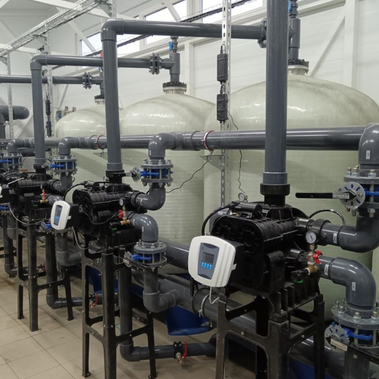

Механическая фильтрация
Предварительное удаление взвешенных частиц, песка, ржавчины и других механических загрязнений.
Подобрать решение →Разрабатываем и внедряем технологические решения для очистки воды на промышленных предприятиях, объектах ЖКХ, энергетики и производства.

Универсальной системы очистки воды не существует. Состав исходной воды, производительность объекта и требования к конечному качеству определяют технологическую схему и состав оборудования.
В процессе водоочистки из воды удаляются механические примеси, растворённые соединения, избыточные соли, органические загрязнения, железо, марганец и другие компоненты, которые могут влиять на технологический процесс или эксплуатацию оборудования.
Поэтому проектирование системы начинается не с выбора конкретного фильтра, а с определения исходных параметров воды и требований конечного потребителя.
Определяем состав исходной воды
Формируем оптимальную последовательность процессов
Подбираем оборудование под расчётные параметры
В реальных системах несколько методов объединяются в единую технологическую схему.
Предварительное удаление взвешенных частиц, песка, ржавчины и других механических загрязнений.
Подобрать решение →Введение воздуха в воду для окисления определённых растворённых соединений и последующего удаления продуктов реакции фильтрацией.
Подобрать решение →Реагентная обработка для укрупнения коллоидных и мелкодисперсных загрязнений с последующим отделением образовавшихся флокул.
Реагенты для очистки →Комплекс технологических решений для снижения содержания железа и марганца до требуемых показателей.
Подобрать решение →Использование сорбционных материалов для удаления определённых органических соединений, запахов и других загрязнений.
Подобрать решение →Технология удаления определённых растворённых ионов с помощью ионообменных материалов.
Подобрать решение →Мембранная технология для удаления взвешенных, коллоидных и ряда высокомолекулярных загрязнений.
Подобрать решение →Мембранная очистка для снижения содержания растворённых солей и получения воды с заданными характеристиками.
Подобрать решение →Физический метод обработки воды ультрафиолетовым излучением без внесения химических реагентов.
Подобрать решение →Окислительная обработка воды озоном для решения определённых задач обеззараживания и удаления отдельных загрязнений.
Подобрать решение →Состав схемы определяется результатами анализа воды, производительностью объекта и требованиями к очищенной воде.
Анализ состава и основных показателей.
Удаление крупных и механических примесей.
Обезжелезивание, умягчение, сорбция или реагентная обработка.
Мембранные или специальные технологии.
Контроль соответствия заданным требованиям.
Требования к воде отличаются в зависимости от технологического процесса. Поэтому одна и та же технология не может одинаково эффективно применяться на всех объектах.
Изучаем состав воды, расход, режим работы объекта и требования к конечному качеству.
Определяем необходимые стадии обработки и их последовательность.
Подбираем оборудование с учётом производительности, режима эксплуатации и особенностей объекта.
Получаем систему, рассчитанную под конкретные технологические требования.
Реальные объекты позволяют лучше понять, как технологические решения работают на практике.

Комплексное решение для подготовки воды с учётом требований производственного процесса.
Все проекты →Предварительно определить направление очистки можно, однако для корректного проектирования системы необходимо знать состав исходной воды и требования к очищенной воде.
Водоочистка направлена на удаление конкретных загрязнений и приведение воды к требуемым показателям. Водоподготовка представляет собой более широкий технологический процесс, включающий несколько последовательных стадий для получения воды определённого качества.
Метод зависит от формы железа, его концентрации, pH, производительности системы и других показателей. В зависимости от условий могут применяться аэрация, окисление, реагентная обработка и последующая фильтрация.
Обратный осмос применяется в тех случаях, когда требуется глубокое снижение содержания растворённых солей и других компонентов, удаляемых мембранной технологией.
Да. Сначала проводится оценка существующего оборудования, его производительности и фактического результата очистки. После этого определяются возможные варианты модернизации.
Производительность рассчитывается исходя из расхода воды, режима потребления, пиковых нагрузок и требований технологического процесса.
Передайте нам исходные данные — специалисты «РУС» определят необходимые стадии очистки и предложат подходящее технологическое решение.